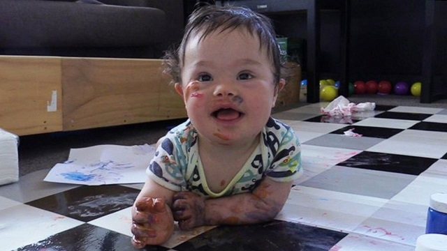
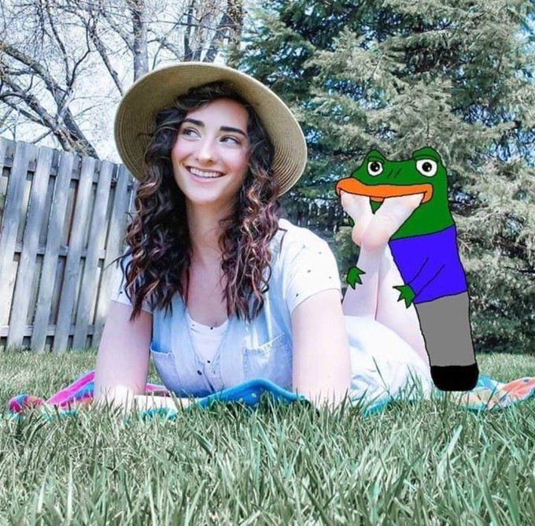
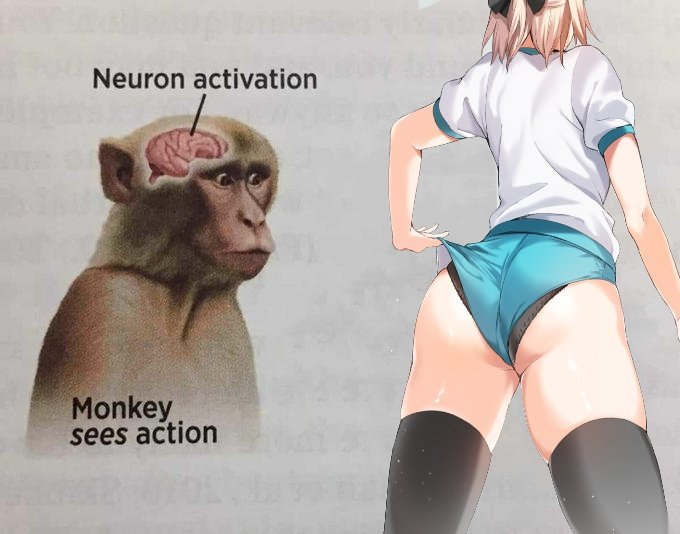

I love that picture of Barry Neufeld
Some people may be wondering right now, pondering, cognizing. You may be thinking. In fact, I can hear your internal monologue right now. And it goes something like this.
TDC_ARTICLE_START
What the fuck is the R word?
TDC_ARTICLE_STOP
And the answer is this.
Pictured: a retard
For bonus fun, try to find if the image above is a parody of Pro-Life Queers, or legitimately the real deal. It's hard, because they have actually passed laws in the past preventing you from aborting the little retards. I think that's a clever strategy to increase the voter base long term. BTW I'm not kidding when I say Donor-Rightists have actually passed laws preventing women from getting abortions... but only if the baby is retarded. Yes, you read that correctly. If the baby is healthy, you can kill it. If the baby is a little retard, you must give birth.
For the record, I am against abortion, but only if the baby is NOT retarded.
Not to get off on too much of a tangent, but I actually think that people who say "all black people look the same," are wrong. All people with Down Syndrome look the same. I once saw a picture of asian children with Down Syndrome. They were the least slanty eyed asians I have ever seen in my entire life. It's like Downies are their own race of people. A sort of anti-master race.

Quick, what race? Answer: Down Syndrome Race
Actually I've got this really awesome retard story that both reflects badly on me, and is hilarious, so everyone should listen up. Back when I worked at a local Asian Owned Produce Store, I once had this really cute girl who would come in with her mother. She and I would sometimes look at each other, and I could tell there was a little summin summin.

All credit goes to TRS
So anyway, one day I work up the courage to start a conversation with her, and I was so damn nervous the entire conversation. But I was looking really good back then, chiseled, nice bod, cute face, basically a solid 8/10, so I figured why not ask this girl for her number. Also, I could tell that she was so nervous, which sort of helped. She was so nervous that she was literally quivering as she talked to me, which I thought was really cute. So, right there in front of my boss, he was chill, I asked for and got her number.
I think you can imagine how I felt.
But more proud of myself.
My coworker could not contain his laughter at me, but I brushed this off as a combination of me being a bit silly and him being jealous. Also, happy laughter on his part, he was a good guy.
When my shift ended, I made sure to text her. Well, first I thought "alright you've gotta make her werrrrk for this," but then I just started texting her. I'm not gonna lie, this girl was flat out cute, and I was getting myself hard just thinking about all the things I was going to do to her. So I start texting her, and it's something like "heyyy, is this the girl from *nameOfStore ;)", and yes, asshole, I do like to throw in the winky face there you fucking queer. All's fair when trying to have deep intimate relationships with beautiful women.
But anyway, I'll never forget her reply,
TDC_ARTICLE_START
"My name is x, I like to dance and hang out with my friends."
TDC_ARTICLE_STOP

And I was just baffled because like WTF is this retard talking about. But I kept texting her back, and I kept getting these weird, cryptic responses that weren't really germaine to what I was texting her. Anyway, eventually I texted her something like,
TDC_ARTICLE_START
Look, if you're just trying to antagonize me, I think that's kinda mean. Goodbye.
TDC_ARTICLE_STOP
Because I thought she was just fucking with me, and leading me on. And I have to admit, I felt kinda bummed, with my boner most definitely wilted a few text exchanges ago. So I dropped her.
The next day, I come back into work, and have the same coworker. And I start explaining what happened with the girl to him. And he says,
TDC_ARTICLE_START
Timothy, I didn't want to tell you this, because love is a fickle thing, and there is nothing as beautiful as the innocence of pure attraction. But I knew that girl from when I went to school, and while she had a sweet disposition, and a pure heart, she had to go to the developmentally challenged stream at EMS. I'm sorry, I'm sure in another life it could have worked out for you, but I think all is for naught.
TDC_ARTICLE_STOP
Only he didn't really say that, he laughed and said,
TDC_ARTICLE_START
Oh yeah that girl was in the retard program at EMS.
TDC_ARTICLE_STOP

So there you have it. In my early twenties I was legitimately so nervous when talking to a girl that I didn't realize that she was retarded.

In my defense though she was legitimately fine. I think she might have just been shaken really hard as a baby or something. Or maybe she was dropped on her head and that's how she got the brain damage. Because looks wise she was pretty damn close to my perfect ten. This was a cute retard if ever there was one.
Apparently this girl is also retarded.
Anyway, Barry Neufeld is as close to our goy as their is amongst those who aren't explicitly our goys. So the angle they're going for is trying to oust him. However, this is hard for them, since Barry is both popular and they don't have any actual mechanism to remove him. This is far from the first thing he's done to draw their beady eyes. Actually the written CTV article is so hilarious I think I'm going to write another story on that.
Barry Neufeld, Chilliwack School Trustee